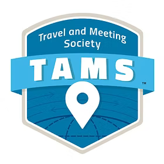

TAMS Revolution: Redefining the RFP

Project Overview
In partnership with TAMS (Travel and Meeting Society), our 6-person team developed TAMS Revolution, a functional AI-driven demo designed to modernize the legacy Request for Proposal (RFP) process. Working alongside industry leadership, we built a proof of concept demo. The goal was an AI agent that can replace 30-year-old manual workflows with intelligent and automated systems. This work culminated in a featured presentation and live demo sessions at TAMS Ignite 2026 at Harvard University.
My Role: Lead UX/UI Designer
• End-to-End Design Ownership: Devloped 100% of the interface’s design, developing dual-sided prototypes in Figma for both Hotel Buyers and Suppliers and ensured a seamless ecosystem.
• UX Research & Jargon Translation:Co-led user research with one teammate, successfully translated dense and complex business travel lingo into an intuitive accessible user interface.
• Cross-Functional Alignment: Partnered closely with the other project groups to bridge the gap between complex Evaluation, Pricing, and Vendor Discovery.
• High-Fidelity Prototyping:Leveraged Figma to rapidly devlop a working prototype fully robust enough for a live demo.
• Backend UI Retrofitting: Redesigned the functional backend UI to ensure visual consistency between the backend demo and the high-fidelity product vision.
High-Velocity Prototyping & Iteration
Screenshots of the buyer/supplier side demo.
Our team adopted a high-velocity iterative design cycle to hit a strict conference deadline. We navigated evolving business requirements to build a fully functional frontend prototype in just 6 weeks, dedicating an additional 2 weeks to rigorous refinement and presentation prep. By building quick, functional versions of the interface and gathering immediate feedback, we were able to reach the "sweet spot" for user experience much faster than traditional cycles. I utilized Figma to populate these prototypes with realistic data, which was crucial for our Harvard debut.
Requirements Gathering & Cross-Team Coordination
A major challenge of this project was navigating the complex requirements gathering process within a highly specialized sector. I had to rapidly learn dense corporate travel lingo, nuanced pricing terms, and specific business logic to ensure our AI interface was truly functional for industry veterans. Additionally, I was responsible for coordinating these evolving requirements, ensuring that the interface design aligned seamlessly with the overarching goals and technical constraints of all participating teams prior to our live deployment.
Conference Outcome & Live Demo
Live demo recording—the same demo we used at the Harvard presentation.
The TAMS Revolution project was introduced on the main stage at Harvard University during a 15-minute featured session. I co-presented the frontend product vision alongside my design teammate Afterward, we transitioned to immersive breakout rooms where I hosted live interactive demos for industry executives.
Project Assets
Explore the figma demos and the presentation slides used at the Tams Ignite Presentation